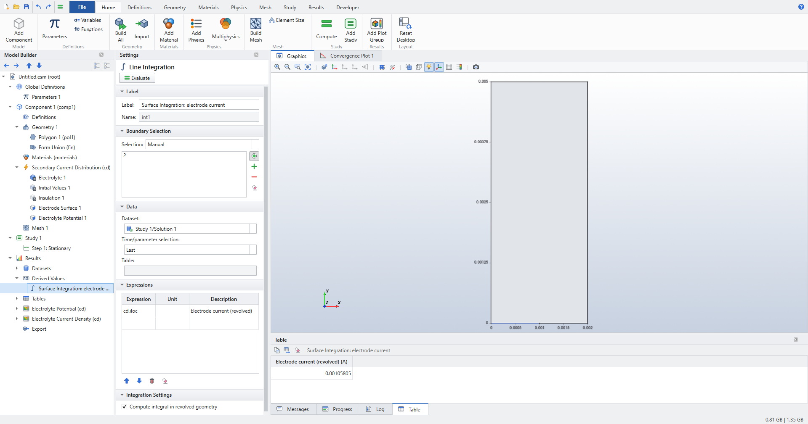
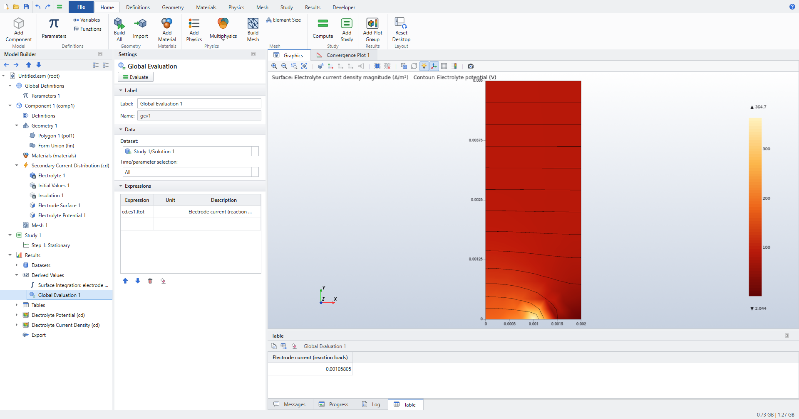

Electrochemistry: current distribution
The Secondary Current Distribution interface (name cd) computes the electrolyte potential and the ionic current in an electrolyte, with electrode kinetics on its boundaries.
It covers primary current distribution (electrodes at equilibrium, ohmic losses only) and secondary current distribution (activation overpotential from a kinetics expression).
Coupled with Transport of Diluted Species (tds), the kinetics can depend on a concentration, which gives a tertiary current distribution.
The interface follows the layout of COMSOL’s Electrochemistry Module, so feature names, settings and result names will look familiar. Elmer Studio is an independent project and is not affiliated with COMSOL; underneath, every model runs as an Elmer case.
For worked examples with checked numbers, see Electrochemistry: current distribution. Every setting is listed in Secondary Current Distribution (cd) and Transport of Diluted Species (tds).
The equations
The interface solves charge conservation in the electrolyte for the electrolyte potential \(\phi_l\):
On an Electrode Surface the local current density \(i_{loc}\) enters the electrolyte. It is a function of the overpotential:
Here \(\phi_{s,ext}\) is the electric potential of the electrode and \(E_{eq}\) the equilibrium potential. Anodic current is positive: an anode pushes current into the electrolyte.
Adding the interface
-
Choose (Ctrl+N) and click Model Wizard.
-
Pick the space dimension: 3D, 2D or 2D Axisymmetric.
-
Under Electrochemistry > Primary and Secondary Current Distribution, select Secondary Current Distribution and click Add. For a tertiary model, also add Chemical Species Transport > Transport of Diluted Species.
-
Click Study, choose Stationary and click Done.
To add the interface to an existing model, use .
The interface starts with three default features: Electrolyte 1, Initial Values 1 and Insulation 1. Add the others from and , or right-click Secondary Current Distribution and choose Domains or Boundaries.
Interface settings
| Setting | Use |
|---|---|
Current distribution type |
|
Element order |
|
Elmer solver |
|
Maximum Newton iterations (kinetics) |
Iteration limit for nonlinear kinetics (default |
Newton damping factor |
Fixed damping of every Newton step (default |
Line search (backtrack steps that increase the residual) |
On by default. See Solving nonlinear kinetics. |
With Current distribution type set to Primary, the kinetics settings of each Electrode Surface stay visible but are ignored.
|
Electrolyte, current source and initial values
- Electrolyte
-
Sets the conductivity \(\sigma_l\). Electrical conductivity is taken from the material (property Electrical conductivity) or set to
User definedwith any expression, for example20[S/m]or a parameter. - Current Source
-
A volumetric current source \(Q_l\) in
A/m^3. - Initial Values
-
The starting electrolyte potential \(\phi_l\). For nonlinear kinetics a reasonable start helps; see also Polarization curves and continuation.
Electrode Surface
Add it with and select the electrode boundaries.
Each Electrode Surface has a name, es1, es2, and so on, shown in the Name field of its Settings.
That name appears in the result variables, for example cd.es1.Itot.
Potentials
- Electric potential (of the electrode) (\(\phi_{s,ext}\))
-
The potential of the metal. Use a parameter here, for example
Vapp, and sweep it to get a polarization curve. - Equilibrium potential (\(E_{eq}\))
-
Any expression. In a tertiary model it may depend on the concentration
c.
Kinetics
Choose the law in Kinetics expression type.
In the formulas below \(f = F/(RT)\), with the Temperature setting \(T\) (default 298.15[K]).
| Kinetics expression type | Local current density | Settings used |
|---|---|---|
Primary condition (thermodynamic equilibrium) |
No kinetics: the electrolyte potential is fixed to \(\phi_l = \phi_{s,ext} - E_{eq}\). |
- |
Butler-Volmer |
\(i_0\left(e^{\alpha_a f\eta} - e^{-\alpha_c f\eta}\right)\) |
Exchange current density, Anodic transfer coefficient, Cathodic transfer coefficient, Temperature |
Linearized Butler-Volmer |
\(i_0(\alpha_a+\alpha_c) f\eta\) |
as Butler-Volmer |
Anodic Tafel equation |
\(i_0\,10^{\eta/A_a}\) |
Exchange current density, Anodic Tafel slope |
Cathodic Tafel equation |
\(-i_0\,10^{-\eta/A_c}\) |
Exchange current density, Cathodic Tafel slope |
Butler-Volmer with limiting current |
\(\dfrac{i_a}{1+i_a/i_{lim}} - \dfrac{i_c}{1+i_c/i_{lim}}\), with \(i_a = i_0 e^{\alpha_a f\eta}\), \(i_c = i_0 e^{-\alpha_c f\eta}\) |
as Butler-Volmer, plus Limiting current density |
User defined i(eta) |
Any expression in |
Local current density i(eta) |
| The sign convention is anodic positive. The cathodic Tafel law returns a negative current density, which leaves the electrolyte. |
User-defined kinetics
In Local current density i(eta), write eta for the overpotential (in volts).
The expression may use parameters, functions and the built-in constants F_const and R_const.
Only the whole word eta is replaced; names such as beta or theta stay as they are.
- Tabulated polarization data
-
Create an Interpolation function with , give it a Function name, for example
pol, and enter the (η, i) pairs in its table. Then set Local current density i(eta) topol(eta). The function is piecewise linear between the points. - Clamped laws
-
Two-argument
min(a, b)andmax(a, b)work and may be nested, for examplemin(max(j0*exp(min(eta/b,30))/(1+j0*exp(min(eta/b,30))/jl),0),20*jl). Elmer’s own MATCmin/maxtake one argument, so Elmer Studio exports these as small helper functions.
The Newton slope of a user-defined law is a central difference with a step of 0.1 mV; its absolute value is used, so the Robin coefficient stays positive.
Dissolution
Molar mass (dissolving metal), Number of participating electrons and Metal density define the dissolution (recession) velocity cd.es1.vdis:
It uses the conservative local current density cd.iloc (see How the electrode current is computed).
Other boundary conditions
- Electrolyte Potential
-
Fixes \(\phi_l\) on a boundary, for example a reference or counter electrode at
0[V]. - Electrolyte Current Density
-
Prescribes the inward normal current density \(i_n\).
- Insulation
-
No current. This is the default on all exterior boundaries not used by another feature.
- Symmetry
-
No current through a symmetry plane.
|
The interface models the electrolyte only. There is no electrode (solid-phase) domain, no total-current condition and no double-layer capacitance. Set the electrode potential directly with Electric potential (of the electrode); to reach a target current, sweep it. |
Results
Result variables keep COMSOL’s names:
| Name | Meaning | Unit |
|---|---|---|
|
Electrolyte potential |
|
|
Electrolyte current density vector and components |
|
|
Electrolyte current density magnitude |
|
|
Local current density into the electrolyte, recovered from the reaction loads on Electrode Surface, Electrolyte Potential and Electrolyte Current Density boundaries |
|
|
Normal electrolyte current density (outward) |
|
|
Total current of Electrode Surface |
|
|
Overpotential \(\phi_{s,ext}-E_{eq}-\phi_l\) |
|
|
Local current density from the kinetics expression \(i_{loc}(\eta)\) (not defined for primary electrodes) |
|
|
Dissolution velocity \(M\,i_{loc}/(nF\rho_m)\) |
|
In 2D models, cd.es1.Itot is a current per unit depth (A/m).
In 2D axisymmetric models it is the current of the full revolution.
A solved study gets two default plot groups: Electrolyte Potential (cd) and Electrolyte Current Density (cd).
Evaluate cd.es1.Itot with .
More on derived values in Results and Result variables.
How the electrode current is computed
cd.es1.Itot is the sum of the nodal reaction loads of the potential equation on the electrode boundaries.
This sum is exactly conservative: the current that leaves the anodes equals the current that enters the cathodes, up to the solver tolerance.
An integral of \(-\sigma_l\nabla\phi_l\) over the boundary is not, because the gradient is only accurate to the discretization error.
cd.iloc turns the same loads into a current density:
-
in 2D and 2D axisymmetric models, each nodal load is divided by the node’s lumped boundary weight;
-
in 3D, it is the consistent projection of the loads onto the boundary, which is smooth and correct at the corner nodes of quadratic triangles.
A Surface Integration of cd.iloc over the electrode boundaries uses the same weights, so it returns cd.es1.Itot.
The regression tests check this to 1e-9, also face by face on a 3D plate electrode, where the face currents add up to the electrode current.
Use it to split an electrode’s current between faces, or to integrate over part of an electrode.
cd.es1.iloc is different: it evaluates the kinetics expression at the computed overpotential.
On a converged solution both agree; on a primary electrode only cd.iloc exists.
2D axisymmetric models
Elmer’s axisymmetric loads are per radian, so cd.es1.Itot includes the factor \(2\pi\).
Derived values on 2D axisymmetric models integrate in the revolved geometry by default (setting Compute integral in revolved geometry, weight \(2\pi r\)).
The boundary integral of cd.iloc over a disc electrode is then its current cd.es1.Itot.
Clear the check box to integrate over the r-z plane instead.
| In 2D models the boundary integral is called Line Integration, as in COMSOL. The Results ribbon command is still labelled Surface Integration. |


Solving nonlinear kinetics
Primary electrodes are Dirichlet conditions, so a primary model is linear and solves in one step. Linearized Butler-Volmer is a constant Robin condition and is also linear.
All other kinetics are written in Newton–Robin form. At each iteration the kinetics are linearized around the current overpotential:
On convergence the condition equals the kinetics exactly. The iteration stops at a relative change of 1e-10 or after Maximum Newton iterations (kinetics).
- Line search
-
With the HeatSolve back end (see Which Elmer solver runs), Line search (backtrack steps that increase the residual) shortens any Newton step that would increase the residual. This keeps steep laws such as Tafel or exponential fits from overshooting. Leave Newton damping factor at
1when the line search is on. - Newton damping
-
Newton damping factor below 1 scales every step by a fixed factor. Use it only if the line search alone does not converge; it slows convergence near the solution.
| If a high cell voltage does not converge from the initial values, sweep the voltage up to it. Each sweep step starts from the previous solution (next section). |
Polarization curves and continuation
To compute a polarization (V–I) curve:
-
Put the electrode potential in a parameter, for example
Vapp, and use it in Electric potential (of the electrode). -
Click .
-
Set Parameter name
Vapp, Parameter value list for examplerange(0.05,0.05,0.25), Parameter unitV. -
Compute, then evaluate
cd.es1.Itotwith (Time/parameter selectionAll) and plot it with .
Reuse solution from previous step on the Parametric Sweep is Automatic by default.
Each stationary step then starts from the previous parameter’s solution when the mesh has not changed, through Elmer restart files.
This is continuation: it saves iterations and helps strongly nonlinear kinetics converge.
When a swept parameter changes the geometry, the mesh changes too, and that run starts from the initial values.
Set it to Off to start every run from the initial values.
The sweep can also run over several parameters with Sweep type All combinations or Specified combinations and the More parameters table.
See Studies and solving and Studies and solvers.
Tertiary current distribution with Transport of Diluted Species
Add Transport of Diluted Species to the same component.
Its dependent variable is the concentration c (mol/m^3).
-
In the Electrode Surface, use
cin the kinetics: in Equilibrium potential, Exchange current density or a user-defined Local current density i(eta). For example, a linearized Nernst shift:R_const*Tk/(nel*F_const)*(c-cb)/cb. -
In Transport of Diluted Species, choose on the same electrode boundary.
-
Set Electrode surface (name of a Current Distribution feature) to the Electrode Surface’s name, for example
es1. -
Set Stoichiometric coefficient \(\nu\) (moles of species released per mole of reaction in the anodic direction; negative if consumed) and Number of participating electrons \(n\).
The coupling adds the species flux of the reaction, by Faraday’s law:
\(i_{loc}\) here is the kinetics expression of that Electrode Surface, evaluated with the current potential and concentration.
The Electrode Surface Coupling needs kinetics.
If the Electrode Surface uses the primary condition, or the interface is set to Primary, the case is refused with a message asking for a kinetics expression.
|
Coupled iteration
The two interfaces are solved one after the other (segregated) until the change between iterations is small. The Stationary study step controls this loop:
- Max coupling iterations
-
Maximum number of passes (default
30). - Coupling tolerance
-
Relative change at which the loop stops (default
1e-6). For tight checks, use a smaller value, for example1e-11. - Coupling damping factor
-
Under-relaxation of every coupled physics between iterations (default
1, no damping).
If the coupled iteration oscillates and grows, lower the damping factor, for example to 0.5 or 0.25.
When a change in one field returns amplified by a loop gain \(G > 1\) after one pass through both interfaces, the damping factor must be below \(2/(1+G)\).
A coupled stationary run writes its result once, after the loop has converged.
Migration of charged species
In an electrolyte under an applied field, ions also migrate. Check Migration in electric field on the species' Transport Properties and give its Charge number z and Temperature T. The flux then becomes Nernst–Planck’s
with the Nernst–Einstein mobility D/RT and the electrolyte potential \(\phi_l\) of the Secondary Current Distribution interface. Elmer Studio computes \(\nabla\phi_l\) with the current distribution’s FluxSolver in every coupling iteration, and adds the migration drift \(-zDF/(RT)\,\nabla\phi_l\) to the convection velocity of the species equation. The species interface is always solved after the current distribution and the flow, so it sees their latest fields.
| The drift enters as a convection velocity, which is exact where the potential satisfies Laplace’s equation (uniform conductivity and no volumetric current source), the usual case in an electrolyte. Migration does not feed back into the conductivity: the electrolyte conductivity stays the one you give. |
Checked in tests/test_migration.py: along a strip with a linear potential, the steady profile is the exact exponential \(c_0 + (c_1-c_0)\,(e^{Py/L}-1)/(e^P-1)\) with \(P = -zFV/(RT)\), to 1e-4 for z = 1 and z = −2. With migration off, the profile is linear to 1e-9.
Species fluxes
Transport of Diluted Species results include tds.tflux (the diffusive flux vector −D∇c) and its magnitude tds.tfluxMag. They also include tds.ntflux, the normal total flux through boundaries with a fixed concentration (outward positive). Like cd.iloc, it comes from Elmer’s reaction loads, so its integral over a boundary is exactly the species transfer through it. Use it, for example, to drive a transport-limited dissolution with a Prescribed Normal Mesh Velocity of -tds.ntflux*Vm (Vm: the metal’s molar volume).
Electrodes on swept geometries: Box Selections
Boundary numbers follow the geometry. When a swept parameter changes the shape, for example the amplitude of a wavy electrode going to zero, the boundaries can be renumbered, and a feature with a manual selection would land on the wrong boundary.
Use a Box Selection instead:
-
Click .
-
Set Geometric entity level to
Boundary. -
Enter the box limits, for example y maximum
L/2for everything in the lower half. Blank limits are unbounded; plain numbers are in the geometry length unit. -
Choose Include entity if
Entity inside boxorEntity intersects box. -
Build the geometry (F8).
-
In the Electrode Surface (or any physics, mesh or result feature), choose the Box Selection in the Selection list.
Each run of a sweep re-evaluates the box on its own geometry, so the electrode features follow the right boundaries. See Selections.
Deforming electrodes: dissolution and deposition
An electrode that dissolves (electropolishing, electrochemical machining, corrosion) or grows (electrodeposition) changes the shape of the electrolyte, and with it the current distribution. Two settings make the shape follow the current:
-
On the Electrode Surface, in the Dissolution section, check Deforming electrode surface (the boundary dissolves or grows). The boundary then moves along its normal at
\[v_n = \varepsilon\,\frac{M\,i_{loc}}{n F \rho_m}\]with the Molar mass, Number of participating electrons and Metal density of the same section. Anodic current (positive \(i_{loc}\)) dissolves the metal and the electrolyte grows; cathodic current deposits. Current efficiency \(\varepsilon\) is an expression and may use the local current density
iloc, for exampleiloc > 10[A/cm^2]for a passivation threshold below which nothing dissolves. -
Add a Deforming Domain (, under Component › Definitions) on the electrolyte. Its mesh follows the moving electrodes.
-
Any other boundary can move too: a Prescribed Normal Mesh Velocity () moves it along its outward normal at an expression of the solution. Examples: a species flux times M/ρ for transport-limited dissolution, or
aveop1(cd.es1.vdis)to move a flat boundary with the mean recession of an electrode.
Then solve a Time Dependent study. At every time step the current distribution is solved, as a stationary problem, on the present shape. The deforming electrodes move by the dissolution velocity times the step, and the mesh behind them is smoothed. Each output time is stored with its own geometry, so plots, cut lines and integrals at a given time see the shape at that time. A parameter t in physics settings is the present time, so a voltage can be ramped.
| Deforming Domain setting | Meaning |
|---|---|
Time integration of the boundary motion |
Second order (Heun), the default: a predictor step on the advanced shape, then the average of both velocities. It removes the first-order time-step bias of explicit Euler, at twice the solves per step. |
Maximum boundary motion per time step |
Steps are shortened automatically, so that no electrode node moves more than this fraction of its boundary element length in one step. The output times are always hit exactly. |
Mesh slides along straight walls and symmetry planes |
Non-moving boundaries that are straight and parallel to a coordinate axis keep their shape, while nodes slide along them. This lets an electrode recede along a wall. Symmetry boundaries and the axis of a 2D axisymmetric model always slide; other boundaries are fixed. |
Remesh when the mesh gets distorted |
2D and 2D axisymmetric: when an element’s shape quality or size falls below the given fraction of its value after the last remeshing, the mesh is rebuilt on the present shape. The boundary numbers stay, so every feature keeps its selection, and the moving boundaries keep their node grading. Use it when the electrode moves by more than a few element sizes, or rounds off a sharp corner. |
Results of a deforming electrode
-
Electrode Shape (cd), a default 1D plot group of 2D models: the moving boundaries' outline at every output time (a Line Graph along boundaries, x-axis parameter x, expression
+y, All solutions). -
cd.dx,cd.dy,cd.dz,cd.disp,cd.dispMag: the mesh displacement from the initial shape (until the first remeshing). -
Coupling operators on the electrode boundary follow the shape. With a Maximum, a Minimum and an Average operator on the anode,
(maxop1(y)-minop1(y))/2is the amplitude of a rough surface, and-aveop1(y)the mean removed thickness. Evaluate them over time with a Global Evaluation or a Global plot.
The deforming electrode tutorial levels a rough anode and checks the rate against linear theory.
Transport-limited dissolution is the same thing without a current distribution. A saturated anode (Concentration csat in Transport of Diluted Species) dissolves at a Prescribed Normal Mesh Velocity of -tds.ntflux*Vm. The flat outer edge of the diffusion layer keeps its distance δ from the mean surface with a second Prescribed Normal Mesh Velocity, aveop1(tds.ntflux*Vm), where aveop1 is an Average coupling operator on the anode. The test suite checks the levelling rate \(-k\coth(k\delta)\) of this case to 1 %, with the layer thickness held constant to 0.2 %.
| Physics are solved quasi-statically: transient terms (for example of Transport of Diluted Species in a tertiary model) are not integrated in time while the electrode moves. Moving meshes work in 2D, 2D axisymmetric and 3D (triangles, quadrilaterals, tetrahedra); remeshing is available in 2D and 2D axisymmetric. |
Which Elmer solver runs
Elmer has no dedicated current-distribution solver.
With Elmer solver Automatic, Elmer Studio picks one:
| Situation | Elmer solver |
|---|---|
Only primary electrodes (or Current distribution type |
StatCurrentSolve |
Kinetics that need a Robin condition |
HeatSolve, with the conductivity as heat conductivity and the kinetics as heat transfer coefficient and external temperature |
Kinetics, and a Heat Transfer interface in the same component already uses HeatSolve |
ModelPDE, with the kinetics as Robin coefficient and external field |
A FluxSolver then computes the current density cd.Il once, on the converged solution.
Transport of Diluted Species runs on ModelPDE.
Forcing StatCurrentSolve (no kinetics) on a model with electrode kinetics stops with an error: kinetics need the HeatSolve or ModelPDE back end.
|
The linear solver is chosen in Solver Configurations; with the automatic choice, 3D current distribution switches from a direct to an iterative solver at about 30 000 degrees of freedom. To read the generated case, use .
Elmer installations and from-source builds
Elmer Studio finds an installed Elmer automatically. You can also point it to an Elmer build tree compiled from source: open or , enter the folder in Elmer installation or build folder and click Detect. Below the version, a Features line reports a capability probe of that installation: whether its StatCurrentSolve has the diffusion-current term for multi-ion electrolytes, and whether a Fortran compiler for user solvers was found. The current-distribution features on this page do not need either.
Meshing electrodes
Current density is singular at the edge of an electrode that meets an insulator, for example a disc in an insulating plane.
Refine there with Size nodes on the electrode boundary and on the edge point, and keep the global Maximum element growth rate (default 1.3) so the fine elements grade into the domain.
Without growth-rate control, a refined electrode edge sits inside coarse elements; on the disc electrode test that put the resistance off by 6 to 46 %.
For periodic or wavy electrodes, a Mapped mesh with Distribution nodes (element counts and Element ratio grading) gives structured quadrilaterals refined toward the electrode. See Mesh.
Verification
tests/test_electrochemistry.py checks the interface against closed-form solutions with real Elmer runs:
| Check | Agreement |
|---|---|
1D cell, every kinetics type, against \(i = i_{loc}(V - iL/\sigma)\) (current, and |
1e-9 |
Tabulated i(η) through an Interpolation function |
1e-6 |
Polarization sweep (V–I curve) |
1e-8 at every voltage |
Newman’s disc electrode, 2D axisymmetric, \(R = 1/(4\sigma a)\) with the far-field term |
better than 0.5 % (about 0.06 % in a recent run) |
Sinusoidal anode, current modulation \(a\,k\coth(kL)\) |
0.2 % required (0.02 % measured) |
Tertiary Nernst layer, \(i = \sigma V/(L+\Lambda+\beta\delta)\) |
1e-8 |
Surface Integration of |
1e-9 |
Most of these are walked through step by step in Electrochemistry: current distribution.